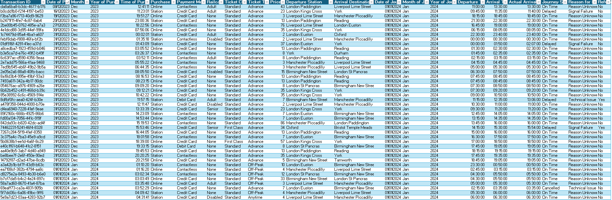
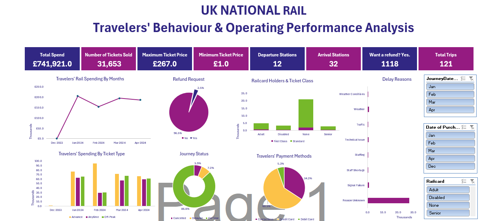

UK National Rail - Customer Behaviour and Operating Performance Analysis
Data is provided for train tickets for UK National Rail from January – April 2024, with further details on ticket class and types, date and time of journey, departure and arrival stations and time etc. The data provided is relatively clean. However, a bit more of data cleaning ensured that the data is in good shape for analysis and creating an interactive dashboard.
Pivot tables were created from the train tickets data, with different charts extracted to give insights into customer behaviour and operating performance. A comprehensive dashboard was created to answer basic questions on these themes.
From the dashboard, the following questions can be answered:
1. What is the total revenue from train tickets between Jan – April 2024?
2. What is the total customer spend on train tickets within the same period?
3. What is the maximum and minimum train ticket price?
4. How many tickets were sold during the data period?
5. What is the total number of departure and arrival stations?
6. What percentage of tickets sold were refunded?
7. What is the percentage of the journeys that were delayed or cancelled?
8. What is/are the customers most preferred method of paying for ticket purchase?
9. What is the most reason(s) for trips delayed?
10. What is the total revenue from first class/standard trips?
In addition to the above questions, I will strive to answer some key questions such as:
1. What are the most popular routes?
2. What are the peak travel times?
3. How does revenue vary by ticket types and classes?
4. What is the on-time performance? What are the main contributing factors
Key Findings
1. The total revenue from ticket sales is £741,921. Please, note that the actual dates for the ticket sales were Dec 2023 – April 2023. However, it is assumed that the customers did not use the tickets until Jan – April 2024. And from an accounting perspective, the Rail service cannot recognise revenue until it has performed its obligations that is connected to the money it has received. This is also the amount that is the actual customer spend on rail spending during the same period as the customer’s spending is equal to the Rail Services’ revenue.
2. The highest ticket price is £267, while minimum ticket is £1.
3. A total 31,653 tickets were sold between Dec 2023 and April 2024.
4. Departure Stations were 12 in total while arrival stations were 32.
5. A total of 1,118 tickets, amounting to 3.5% of the total tickets sold were refunded.
6. A combined total of 13.1% (Delayed – 7.2%; Cancelled – 5.9%) of all trips in the period Jan -April 2024 were delayed/cancelled.
7. A significant number of the trave llers (60.5%) preferred to use their credit card for ticket purchase payment, the second preferred method is contactless payment, while the rest use their debit card.
8. While weather conditions, traffic, technical issues, staff shortage etc. amongst other contributed to delays in train services, the rail service did not provide a reason for a large number of its trips that were delayed.
9. The Rail Service made over £592,522 from standard users, while £149,399 was raked in from first class train users
As noted above, the main concern is to look metrics around customer behaviour and operating performance, so as to look at how customer experience and the rail services’ performance can be improved.
1. A look at the dashboard provides a glimpse at what is the most popular routes among UK National Rail users. Generally, London Euston-Birmingham New Street, London St Pancras, London Paddington-Liverpool Lime Street, London Paddington-Reading, Liverpool Lime Street-Manchester Piccadilly and York-York are the most popular among the service users. However, the disabled seem to London Euston-Birmingham New Street route most than any other route, while the senior railcard holders Manchester Picadilly-Lime Street most.
2. The departure and arrival times graph provides insight into the times that most users use the rail service. Most of them depart at 18:45:00 and arrive at 19:05:00, Other peak times include 17:45:00,16:00:00, 06:30:00, among others.
3. Most of the rail service’s revenue comes from advance ticket sales, with off-peak sales being the second best. And as noted in 9 above, over £590,000 revenue was made from sales to standard users with the rest coming from the first-class users. In essence, this provides an insight into customers behaviour as most of them tend to minimise their cost by taking advantage of reduced price for advance bookings and preferring the standard class to the first class.
4. Of the total 121 trips made, 86.2% of that was on-time, while the others were either delayed or cancelled. As noted above, no reason was provided for majority of the trips that were cancelled/delayed
Recommendations
1. The standard class, off-peak and advance booking are the most crucial in the revenue generating stream for the National Rail. Hence, more attention needs to be paid to these customers. Improvement in the services provided to users may encourage them to use the service often thereby leading increase in revenue in the long run. It is also important to maximise the peak times as well and the most popular routes among service users to maximise revenue generation.
2. It is important that reasons are provided when there is a delay or cancellation, as this would be improved customer experience and encourage to keep using the national rail.